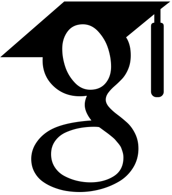
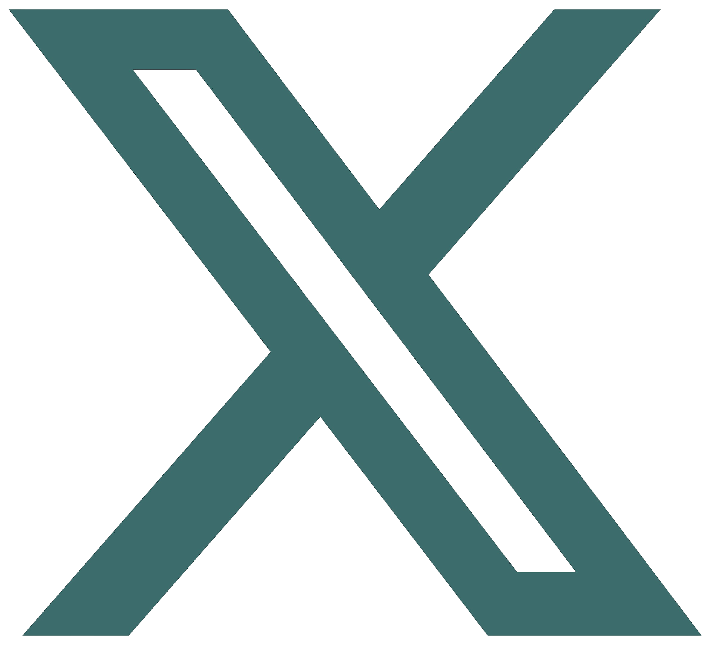
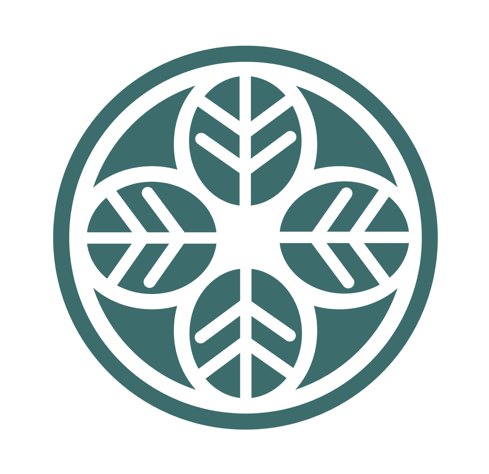

Sam
Munachiso Samuel Nwadike (MSc, BSc@NYU)
Google Scholar • Twitter
Currently: Research Engineer (II) with Dr. Kentaro Inui [1]
Lab: MINT Team (Mechanistic Interpretability [2]) @ MBZUAI
An Examination: "Why Small Teams Still Work Big Magic" [essay]
Hi, I'm Sam, a researcher working on mechanistic interpretability of large language models (LLMs), the core technology behind AI systems like ChatGPT, Bard, Meta AI, and Grok.
I earned my bachelor’s degree at New York University (Abu Dhabi & New York). I am now at MBZUAI, an AI-focused research institute, with highly-ranked programs in both [NLP] and [ML].
Let's catchup over email?
E: munachisnwadike@gmail.com
Flow Field
(Click and drag to stir)